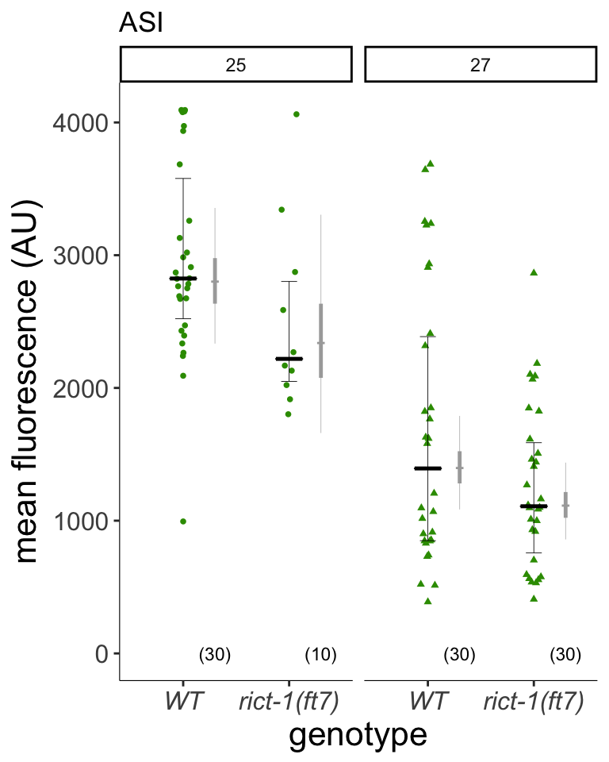

Figure 3
daf-28, but not daf-7, is strongly reduced by temperature
3A
strains = "N2"
#strains<-c("N2","ft7")
days<-c("11_23_16", "12_6_16")
#days <- "11_23_16" # 12_6 was likely L2s based on the timing
d7GFP<-read.csv(file.path(pathname, "extdata/2A_3A_daf7GFP.csv")) %>%
filter(mean!=4095 & genotype %in% strains & date %in% days & pheromone == 0 & food == "OP50") %>%
mutate(genotype = factor(genotype, levels=strains), ID = as.character(ID)) %>%
separate(ID, c("ID.A", "ID.B"), sep = ":", extra = "drop") %>%
mutate(genoID = as.factor(paste(date, genotype, ID.A, sep = ":")), cell.norm = mean)
df <- d7GFP %>% group_by(genotype, date, neuron, temp, genoID) %>% summarise(cell.norm = mean(cell.norm))
#### plot ####
p<-df %>% ggplot(aes(x=temp, y=cell.norm)) +
list(add.scatter(),add.median(width = .5),add.quartiles()) +
labs(
title = "daf-7 expression does not decrease at high temperatures",
x = "temperature (ºC)",
y = "mean intensity"
) + stat_smooth(method="lm",linetype="dashed", size = 0.2, colour = "grey", alpha = 0.05) +
add.n() +
theme_classic() +
theme(axis.title.x = element_text(size=16),
axis.text.x = element_text(size = 16),
axis.text.y = element_text(size = 15),
strip.text.x = element_text(size=20))
p
library(lsmeans)
log.tran<-make.tran(type="genlog", param = c(0.5,10))
lm.ASI.lin <- with(log.tran, lm(linkfun(cell.norm) ~ temp, data = df))Figure 3A daf-7 expression does not strongly decrease at high temperatures. Quantification of daf-7p::gfp fluorescence in the ASI,neurons in L1 larvae grown at the indicated temperatures. Each data point is the average GFP fluorescence of a single animal (2 neurons per animal); numbers in parentheses below indicate the total number of animals examined. Horizontal lines are the median; error bars are quartiles. Dashed lines indicate slope of linear regression as a function of temperature.
library(sjPlot)
sjt.lm(lm.ASI.lin, depvar.labels = "log(GFP expression)", show.fstat = TRUE)| log(GFP expression) | ||||
| B | CI | p | ||
| (Intercept) | 2.86 | 2.41 – 3.31 | <.001 | |
| temp | 0.02 | -0.00 – 0.03 | .099 | |
| Observations | 64 | |||
| R2 / adj. R2 | .043 / .028 | |||
| F-statistics | 2.808 | |||
3B
tempdays<-c("1", "4", "6", "8", "10")
foods <- "OP50"
strains <- "N2"
d28<-read.csv('extdata/2D_3B_4B_daf-28_GFP_rict-1.csv') %>%
separate(ID, c("ID.A", "ID.B"), sep = ":", extra = "drop") %>%
subset(pheromone == 0) %>%
mutate(day = as.factor(day), genotype = factor(genotype, levels = strains),
genoID = interaction(date,neuron,temp,genotype,ID.A))
df <- d28 %>% subset(day %in% tempdays & food %in% foods & mean !=4095 & genotype %in% strains) %>% group_by(date,temp,genotype,neuron,genoID) %>% summarise(cell.norm = mean(mean)) %>%
data.frame() %>% mutate(group.id = interaction(genotype, neuron)) # take mean of each worm
#### plot ####
(p<-df %>% ggplot(aes(x=temp, y=cell.norm)) +
list(add.scatter(),add.median(width = .5),add.quartiles()) +
theme_classic() +
facet_grid(.~neuron) +
scale_color_viridis(discrete = TRUE) +
labs(title = "daf-28 expression is controlled by temperature",
x = "temperature",
y = "mean fluorescence",
colour = "Temperature") + add.n() +
stat_smooth(method="lm",linetype="dashed", size = 0.2, colour = "grey", alpha = 0.05) +
theme(axis.title.x = element_text(size = 20),
axis.title.y = element_text(size= 20),
axis.text.x = element_text(size = 20),
axis.text.y = element_text(size = 15),
strip.text.x = element_text(size=20),
panel.spacing.x=unit(2, "lines")))
lm.ASI.lin <- with(log.tran, lm(linkfun(cell.norm) ~ temp, data = subset(df, neuron == "ASI")))
#lm.ASI.poly.2 <- update(lm.ASI.lin, formula = . ~ . - temp + poly(temp,2,raw=TRUE))
#anova(lm.ASI.lin,lm.ASI.poly.2) #quadratic fits better but not enough temp points to model
#anova(lm.ASI.lin)
lm.ASJ.lin <- with(log.tran, lm(linkfun(cell.norm) ~ temp, data = subset(df, neuron == "ASJ")))
#anova(lm.ASJ.lin)Figure 3B
daf-28 expression strongly decreases at high temperatures. Quantification of daf-28p::gfp fluorescence in the ASI (left) and ASJ (right) neurons in L1 larvae grown at the indicated temperatures. Each data point is the average GFP fluorescence of a single animal (2 neurons per animal); numbers in parentheses below indicate the total number of animals examined. Horizontal lines are the median; error bars are quartiles. Dashed lines indicate slope of linear regression as a function of temperature.
library(sjPlot)
sjt.lm(lm.ASI.lin, lm.ASJ.lin, depvar.labels = c("ASI", "ASJ"), show.fstat = TRUE)| ASI | ASJ | |||||||
| B | CI | p | B | CI | p | |||
| (Intercept) | 4.70 | 4.09 – 5.30 | <.001 | 4.42 | 4.01 – 4.83 | <.001 | ||
| temp | -0.06 | -0.08 – -0.03 | <.001 | -0.06 | -0.07 – -0.04 | <.001 | ||
| Observations | 114 | 115 | ||||||
| R2 / adj. R2 | .177 / .170 | .303 / .296 | ||||||
| F-statistics | 24.099*** | 49.021*** | ||||||
3C
days = as.factor(8:10) # days containing N2 and ft7 27º data
temps = c("25","27")
strains = c("N2", "ft7")
foods = "OP50"
d28<-read.csv('extdata/2D_3B_4B_daf-28_GFP_rict-1.csv') %>%
separate(ID, c("ID.A", "ID.B"), sep = ":", extra = "drop") %>%
subset(mean!=4095 & food == foods &
temp %in% temps &
genotype %in% strains &
pheromone == 0 &
day %in% days) %>%
mutate(day = as.factor(day), genotype = factor(genotype, levels = strains),
genoID = interaction(date,genotype,ID.A), temp = factor(temp, levels = temps))
df <- d28 %>% group_by(date,temp,genotype,neuron,genoID) %>% summarise(cell.norm = mean(mean)) %>%
data.frame() %>% mutate(group.id = interaction(genotype, temp)) %>% arrange(temp, genotype, neuron) # take mean
# anova(with(log.tran,lm(linkfun(cell.norm) ~ temp, data = df[df$neuron == "ASI",])),with(log.tran,lm(linkfun(cell.norm) ~ temp+genotype, data = df[df$neuron == "ASI",])))
# # for ASI, F = 4.0071, 1Df p = 0.0481 for genotype
# anova(with(log.tran,lm(linkfun(cell.norm) ~ temp, data = df[df$neuron == "ASJ",])),with(log.tran,lm(linkfun(cell.norm) ~ temp+genotype, data = df[df$neuron == "ASJ",])))
# # for ASJ, F = 38.082, 1Df, p < 0.001 for genotype
# # no significant interaction of temp with genotype for either neuron
lm.ASI <- with(log.tran, lm(linkfun(cell.norm) ~ temp + genotype, data = df[df$neuron == "ASI",]))
lm.ASJ <- with(log.tran, lm(linkfun(cell.norm) ~ temp + genotype, data = df[df$neuron == "ASJ",]))
contrasts.ASI<-summary(lsmeans(lm.ASI, pairwise ~ genotype | temp)$contrasts) %>% dauergut::prange()
contrasts.ASJ<-summary(lsmeans(lm.ASJ, pairwise ~ genotype | temp)$contrasts) %>% dauergut::prange()
stan.ASJ<-with(log.tran, stan_lmer(linkfun(cell.norm) ~ group.id + (1|genoID), data = df[df$neuron == "ASJ",], adapt_delta = 0.99, iter = 4000))
stan.ASI<-with(log.tran, stan_lmer(linkfun(cell.norm) ~ group.id + (1|genoID), data = df[df$neuron == "ASI",], adapt_delta = 0.99, iter = 4000))
mixed.ASI <- stan.ASI %>% getStan_CIs(type = "log", group = "temp", base=10, compare_gt = TRUE)
mixed.ASJ <- stan.ASJ %>% getStan_CIs(type = "log", group = "temp", base=10, compare_gt = TRUE)
labels <- c("WT", "rict-1(ft7)")
#### plot ASI ###
mixed <- mixed.ASI
p1 <- df %>% dplyr::filter(neuron == "ASI") %>% ggplot(aes(x = genotype, y = cell.norm)) +
geom_quasirandom(aes(y=cell.norm, pch = temp),colour = "#339900", cex=1,
width = 0.075,size=0.3,
method = 'smiley') +
list(add.median(width=0.25),add.quartiles()) + facet_grid(.~temp) +
stat_summary(aes(x=as.numeric(as.factor(genotype)) + 0.3, y=0),
fun.data = fun_length, geom = "text", size = 3) +
add.Bayes.CI() +
coord_cartesian(ylim=c(0,4095)) +
labs(title = "ASI",
x = "genotype",
y = "mean fluorescence (AU)",
colour = "Temperature") +
theme_classic() +
theme(axis.text.x = element_text(size = 12, face = "italic"),
axis.text.y = element_text(size = 12),
axis.line = element_line(size=0.2),
axis.title = element_text(size=16)) +
scale_x_discrete(labels = labels) +
guides(pch=FALSE)
#### plot ASJ ###
mixed<-mixed.ASJ
p2 <- df %>% dplyr::filter(neuron == "ASJ") %>% ggplot(aes(x = genotype, y = cell.norm)) +
geom_quasirandom(aes(y=cell.norm, pch = temp),colour = "#339900", cex=1,
width = 0.075,size=0.3,
method = 'smiley') +
list(add.median(width=0.25),add.quartiles()) + facet_grid(.~temp) +
stat_summary(aes(x=as.numeric(as.factor(genotype)) + 0.3, y=0),
fun.data = fun_length, geom = "text", size = 3) +
add.Bayes.CI() +
coord_cartesian(ylim=c(0,4095))+
labs(title = "ASJ",
x = "genotype",
y = "mean fluorescence (AU)",
colour = "Temperature") +
theme_classic() +
theme(axis.text.x = element_text(size = 12, face = "italic"),
axis.text.y = element_text(size = 12),
axis.line = element_line(size=0.2),
axis.title = element_text(size=16)) +
scale_x_discrete(labels = labels) +
guides(pch=FALSE)p1 
p2
Figure 3C
daf-28 expression is reduced in rict-1 mutants at multiple temperatures. Quantification of daf-28p::gfp fluorescence in the ASI (left) and ASJ (right) neurons in L1 larvae grown at the indicated temperatures. Each data point is the average GFP fluorescence of a single animal (2 neurons per animal); numbers in parentheses below indicate the total number of animals examined. Horizontal lines are the median; error bars are quartiles.
library(sjPlot)
sjt.lm(lm.ASI, lm.ASJ, depvar.labels = c("ASI", "ASJ"), show.fstat = TRUE)| ASI | ASJ | |||||||
| B | CI | p | B | CI | p | |||
| (Intercept) | 3.46 | 3.39 – 3.53 | <.001 | 3.22 | 3.18 – 3.26 | <.001 | ||
| temp (27) | -0.32 | -0.41 – -0.24 | <.001 | -0.20 | -0.25 – -0.16 | <.001 | ||
| genotype (ft7) | -0.09 | -0.18 – -0.00 | .048 | -0.14 | -0.19 – -0.10 | <.001 | ||
| Observations | 100 | 101 | ||||||
| R2 / adj. R2 | .418 / .406 | .604 / .596 | ||||||
| F-statistics | 34.866*** | 74.890*** | ||||||